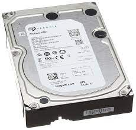

Dag 3
Vandaag was een rustige dag waar ik vooral de brackets van hard drives heb gehaald en dan diezelfde hard drives heb gesorteerd volgens grote. en voor de rest heb ik hetzelfde gedaan als andere dagen: backups met basis instellingen laden op laptops.
